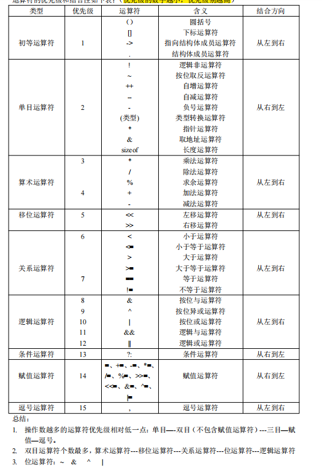
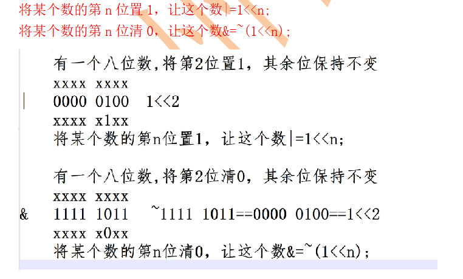
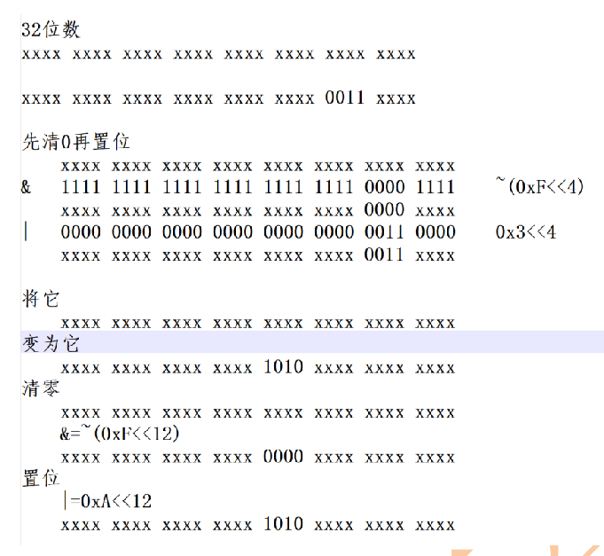
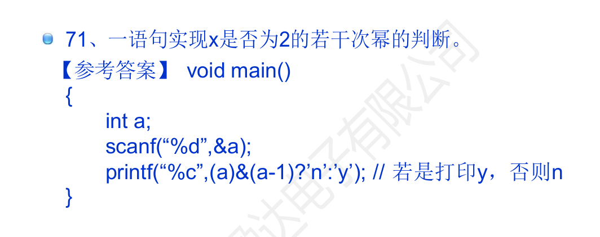

（一）优先级与结合性（常用部分）
由高到低：后缀（() [] -> . ++ --）→ 一元（! ~ ++ -- * & sizeof 强制转换）→ 乘除取余 → 加减 → 移位 → 关系 → 相等 → 位与 → 位异或 → 位或 → 逻辑与 → 逻辑或 → 条件 ?: → 赋值 → 逗号。

不必强记全部，但要记住三条规律（比背表省力）：
- 操作数越多，优先级越低：单目 → 双目（不含赋值）→ 三目 → 赋值。
- 双目运算符里个数最多的是算术，其次移位 → 关系 → 位 → 逻辑，看"运算粒度"就能排序。
- 位运算符的顺序固定为
~→&→^→|，与逻辑运算符的!→&&→||一一对应，别搞反。
两条纪律更实用：不确定就加括号；位运算与关系运算混用时必须加括号。
if (a & 1 == 0) /* 错：实际是 a & (1 == 0)，恒为 a & 0 */
if ((a & 1) == 0) /* 对：判断奇偶 */（二）自增自减
i++先取值后自增，++i先自增后取值；单独成句时二者等价，作为表达式使用时才有差别。- 同一表达式中对同一变量多次修改属未定义行为：
i = i++ + ++i;、printf("%d %d", i++, i++);的结果取决于编译器，不可依赖。
（三）短路求值
&& 与 || 有短路特性：左侧已能确定结果时，右侧不求值。这既是性能特性，也是安全写法的基础：
if (p != NULL && *p == 0) { /* 先判空再解引用，安全 */ }反过来，若右侧含有副作用（如 i++、func()），短路会导致它可能根本不执行，这是逻辑错误的常见来源。
（四）位运算要点
& | ^ ~ << >> 只对整型有效。左移超出位宽或对负数左移属 UB；>> 对负数是否补符号位由实现定义。实际用途集中在四件事：置位、清位、读位、掩码批量操作。
四个动作都是"先造一个只有目标位不同的数，再与原值运算"，其余位保持不变：
x |= (1 << n); /* 第 n 位置 1，其余位不变 */
x &= ~(1 << n); /* 第 n 位清 0，其余位不变 */
x ^= (1 << n); /* 第 n 位取反 */
(x >> n) & 1; /* 读出第 n 位的值 */
一位一位来太慢时，用掩码一次处理连续几位。核心是"先清 0 再置位"，否则新旧数据会或在一起：
x &= ~(0xF << 4); /* 先清掉 bit4~bit7 */
x |= (0x3 << 4); /* 再写入 0011 */
位运算还有一种"一句话"用法，考试里常见：判断整数是不是 2 的若干次幂。2 的幂的二进制只有一个 1，减 1 之后低位全变 1、那个 1 变 0，两者与运算必然为 0。
if (a > 0 && (a & (a - 1)) == 0) { /* a 是 2 的幂 */ }